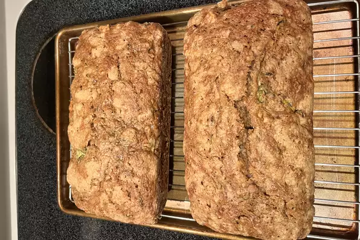

Zucchini Bread

Really, really good and moist- my kids eat it as quickly as I can make it. Bread will freeze well, and keep in refrigerator for weeks.
Ingredients
- 1 teaspoon salt
- 3 eggs
- grated zucchini
Steps
- Grease and flour two 8 x 4 inch pans. Preheat oven to 325 degrees F
- Beat eggs, oil, vanilla, and sugar together in a large bowl. Add sifted ingredients to the creamed mixture, and beat well. Stir in zucchini and nuts until well combined. Pour batter into prepared pans.